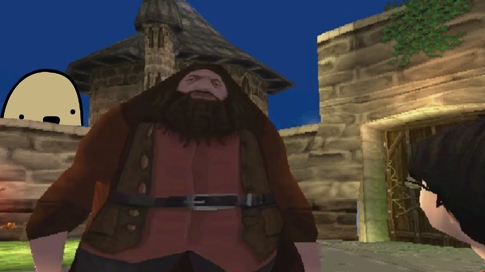
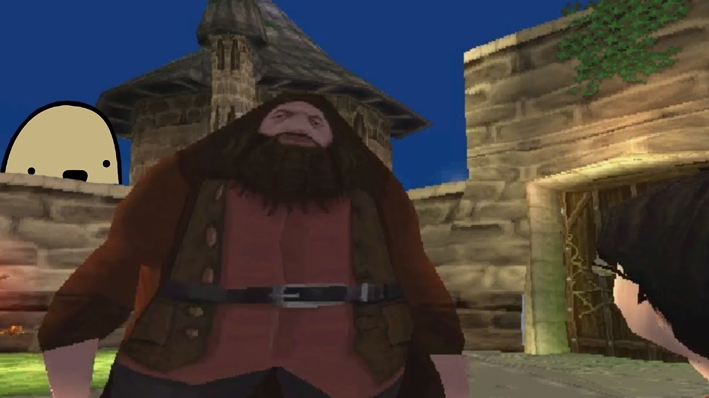

Ryleigh Breen
Oook
Can ooga booga bo boogaing if he no ooga?
 

. *beep* CASSETTE MAN: Connection terminated. (Screen fades into view) I'm sorry to interupt you Elizabeth, if you still even remember that name, but I'm afraid you've been misinformed. You're not here to recieve a gift, nor have you been called here by the individual you assume, although you have indeed been called. (FNAF 6 map appears) You have all been called here, into a labyrinth of sounds and smells, misdirection and misfortune. A labirynth with no exit, a maze with no prize. You don't even realize that you are trapped. (Middle room from map disappears) Your lust for blood has driven you in endless circles, chasing the cries of children in some unseen chamber always seeming so near, yet somehow out of reach. But you will never find them, none of you will. This is where your story ends. And to you, my brave volunteer, who somehow found this job listing not intended for you, although there was a way out planned for you, I have a feeling that's not what you want. I have a feeling that you are right where you want to be. I am remaining as well. I am nearby. This place will not be remembered (FNAF 1 footage appears in the background behind the screen) and the memory of everything that started this can finally begin to fade away, (FNAF 2 footage replaces the FNAF 1 footage) as the agony of every tragedy should. (Burning Scrap Baby appears on the screen) And to you monsters trapped in the corridors, be still, (FNAF 2 footage is replaced with a buring texture) and give up your spirits. They don't belong to you. (Burning Molten Freddy replaces Scrap Baby) For most of you, I believe there is peace and perhaps more waiting for you after the smoke clears. (Burning Springtrap/William Afton replaces Molten Freddy) Although for one of you, the darkest pit of hell has opened to swallow you whole, so don't keep the devil waiting old friend. (Screen goes black, burning texture still in the background) My daughter, if you can hear me, I knew you would return as well. It's in your nature to protect the innocent. (TCTTC minigame appears on screen) I'm sorry that on that day, the day you were shut out and left to die, (TCTTC is replaced with a new 8 bit view from inside the TCTTC location showing a sad child locked outside with two happy children inside and a giant gift box) no one was there to lift you up into their arms, the way you lifted others into yours. (8 bit view is replaced with another 8 bit view of an alleyway with posters and trash alongside the body of a dead child) And then, what became of you? (View of the Prize corner from FNAF 2 appears in the background) I should have known you wouldn't be contempt to just disappear, not my daughter. I couldn't save you then, so let me save you now. (GG,GL appears on the screen, replacing the 8 bit alley, Prize corner fades away) It's time to rest. For you, and those you have carried in your arms. This ends, for all of us. (Screen disappears) End communication. (Entire screen goes black) *beep*
Schooling
- School 1
- School 2
- School 3
. *beep* CASSETTE MAN: Connection terminated. (Screen fades into view) I'm sorry to interupt you Elizabeth, if you still even remember that name, but I'm afraid you've been misinformed. You're not here to recieve a gift, nor have you been called here by the individual you assume, although you have indeed been called. (FNAF 6 map appears) You have all been called here, into a labyrinth of sounds and smells, misdirection and misfortune. A labirynth with no exit, a maze with no prize. You don't even realize that you are trapped. (Middle room from map disappears) Your lust for blood has driven you in endless circles, chasing the cries of children in some unseen chamber always seeming so near, yet somehow out of reach. But you will never find them, none of you will. This is where your story ends. And to you, my brave volunteer, who somehow found this job listing not intended for you, although there was a way out planned for you, I have a feeling that's not what you want. I have a feeling that you are right where you want to be. I am remaining as well. I am nearby. This place will not be remembered (FNAF 1 footage appears in the background behind the screen) and the memory of everything that started this can finally begin to fade away, (FNAF 2 footage replaces the FNAF 1 footage) as the agony of every tragedy should. (Burning Scrap Baby appears on the screen) And to you monsters trapped in the corridors, be still, (FNAF 2 footage is replaced with a buring texture) and give up your spirits. They don't belong to you. (Burning Molten Freddy replaces Scrap Baby) For most of you, I believe there is peace and perhaps more waiting for you after the smoke clears. (Burning Springtrap/William Afton replaces Molten Freddy) Although for one of you, the darkest pit of hell has opened to swallow you whole, so don't keep the devil waiting old friend. (Screen goes black, burning texture still in the background) My daughter, if you can hear me, I knew you would return as well. It's in your nature to protect the innocent. (TCTTC minigame appears on screen) I'm sorry that on that day, the day you were shut out and left to die, (TCTTC is replaced with a new 8 bit view from inside the TCTTC location showing a sad child locked outside with two happy children inside and a giant gift box) no one was there to lift you up into their arms, the way you lifted others into yours. (8 bit view is replaced with another 8 bit view of an alleyway with posters and trash alongside the body of a dead child) And then, what became of you? (View of the Prize corner from FNAF 2 appears in the background) I should have known you wouldn't be contempt to just disappear, not my daughter. I couldn't save you then, so let me save you now. (GG,GL appears on the screen, replacing the 8 bit alley, Prize corner fades away) It's time to rest. For you, and those you have carried in your arms. This ends, for all of us. (Screen disappears) End communication. (Entire screen goes black) *beep*
. *beep* CASSETTE MAN: Connection terminated. (Screen fades into view) I'm sorry to interupt you Elizabeth, if you still even remember that name, but I'm afraid you've been misinformed. You're not here to recieve a gift, nor have you been called here by the individual you assume, although you have indeed been called. (FNAF 6 map appears) You have all been called here, into a labyrinth of sounds and smells, misdirection and misfortune. A labirynth with no exit, a maze with no prize. You don't even realize that you are trapped. (Middle room from map disappears) Your lust for blood has driven you in endless circles, chasing the cries of children in some unseen chamber always seeming so near, yet somehow out of reach. But you will never find them, none of you will. This is where your story ends. And to you, my brave volunteer, who somehow found this job listing not intended for you, although there was a way out planned for you, I have a feeling that's not what you want. I have a feeling that you are right where you want to be. I am remaining as well. I am nearby. This place will not be remembered (FNAF 1 footage appears in the background behind the screen) and the memory of everything that started this can finally begin to fade away, (FNAF 2 footage replaces the FNAF 1 footage) as the agony of every tragedy should. (Burning Scrap Baby appears on the screen) And to you monsters trapped in the corridors, be still, (FNAF 2 footage is replaced with a buring texture) and give up your spirits. They don't belong to you. (Burning Molten Freddy replaces Scrap Baby) For most of you, I believe there is peace and perhaps more waiting for you after the smoke clears. (Burning Springtrap/William Afton replaces Molten Freddy) Although for one of you, the darkest pit of hell has opened to swallow you whole, so don't keep the devil waiting old friend. (Screen goes black, burning texture still in the background) My daughter, if you can hear me, I knew you would return as well. It's in your nature to protect the innocent. (TCTTC minigame appears on screen) I'm sorry that on that day, the day you were shut out and left to die, (TCTTC is replaced with a new 8 bit view from inside the TCTTC location showing a sad child locked outside with two happy children inside and a giant gift box) no one was there to lift you up into their arms, the way you lifted others into yours. (8 bit view is replaced with another 8 bit view of an alleyway with posters and trash alongside the body of a dead child) And then, what became of you? (View of the Prize corner from FNAF 2 appears in the background) I should have known you wouldn't be contempt to just disappear, not my daughter. I couldn't save you then, so let me save you now. (GG,GL appears on the screen, replacing the 8 bit alley, Prize corner fades away) It's time to rest. For you, and those you have carried in your arms. This ends, for all of us. (Screen disappears) End communication. (Entire screen goes black) *beep*